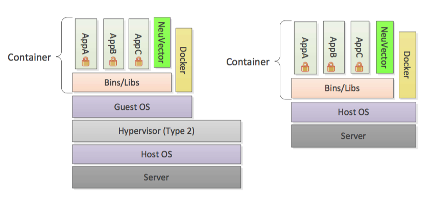
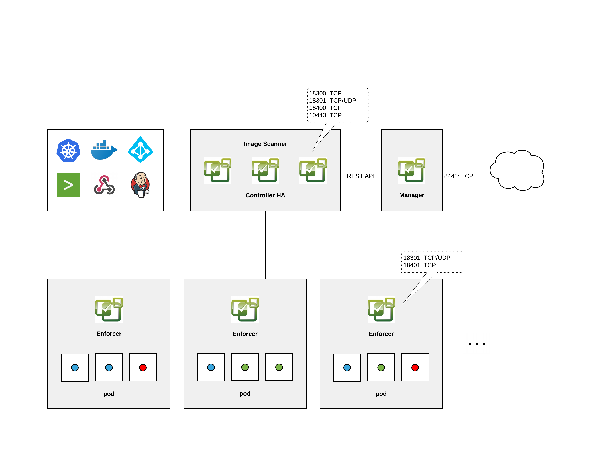

|
Dieses Dokument wurde mithilfe automatisierter maschineller Übersetzungstechnologie übersetzt. Wir bemühen uns um korrekte Übersetzungen, übernehmen jedoch keine Gewähr für die Vollständigkeit, Richtigkeit oder Zuverlässigkeit der übersetzten Inhalte. Im Falle von Abweichungen ist die englische Originalversion maßgebend und stellt den verbindlichen Text dar. |
5.x Übersicht
Die vollständige Lebenszyklus-Container-Sicherheitsplattform
|
Diese Dokumente beschreiben die 5.x (Open Source) Version. Die 5.x Images sind mit dem entsprechenden Tag, z.B. |
SUSE® Security bietet eine leistungsstarke End-to-End-Plattform für Container-Sicherheit. Dies umfasst die End-to-End-Schwachstellenprüfung und den vollständigen Laufzeitschutz für Container, Pods und Hosts, einschließlich:
-
CI/CD Schwachstellenmanagement & Zugangssteuerung. Scannen Sie Images mit einem Jenkins-Plugin, scannen Sie Registries und setzen Sie Zugangssteuerungsregeln für Implementierungen in die Produktion durch.
-
Verstoßschutz. Entdeckt Verhaltensweisen und erstellt eine whitelist-basierte Richtlinie, um Verstöße gegen das normale Verhalten zu erkennen.
-
Bedrohungserkennung. Erkennt gängige Angriffe auf Anwendungen wie DDoS- und DNS-Angriffe auf Container.
-
DLP- und WAF-Sensoren. Überwacht den Netzwerkverkehr zur Datenverlustprävention sensibler Daten und erkennt gängige OWASP Top10 WAF-Angriffe.
-
Laufzeit-Schwachstellenprüfung. Scannt Registries, Images und laufende Container-Orchestrierungsplattformen sowie Hosts auf gängige (CVE) sowie anwendungsspezifische Schwachstellen.
-
Compliance & Prüfung. Führt automatisch Docker Bench-Tests und Kubernetes CIS-Benchmarks durch.
-
Endpoint-/Host-Sicherheit. Erkennt Privilegieneskalationen, überwacht Prozesse und Dateiaktivitäten auf Hosts und innerhalb von Containern und überwacht die Dateisysteme von Containern auf verdächtige Aktivitäten.
-
Multi-Cluster-Management. Überwachen und Verwalten mehrerer Kubernetes-Cluster von einer einzigen Konsole aus.
Weitere Funktionen von SUSE® Security umfassen die Möglichkeit, Container zu isolieren und Protokolle über SYSLOG und Webhooks zu exportieren, die Paketaufzeichnung zur Untersuchung zu initiieren und die Integration mit OpenShift RBACs, LDAP, Microsoft AD und SSO mit SAML. Hinweis: Quarantäne bedeutet, dass der gesamte Netzwerkverkehr blockiert wird. Der Container bleibt bestehen und läuft weiter - nur ohne Netzwerkverbindungen. Kubernetes wird keinen Container starten, um einen in Quarantäne gestellten Container zu ersetzen, da der API-Server weiterhin in der Lage ist, den Container zu erreichen.
Sicherheitscontainer
Die SUSE® Security Laufzeit-Container-Sicherheitslösung enthält vier Arten von Sicherheitscontainern: Controller, Durchsetzer, Manager und Scanner. Ein spezieller Container namens Allinone wird ebenfalls bereitgestellt, um die Funktionen von Controller, Durchsetzer und Manager in einem einzigen Container zu kombinieren, hauptsächlich für docker-native Implementierungen.
SUSE® Security kann auf virtuellen Maschinen oder auf Bare-Metal-Systemen mit einem einzigen Betriebssystem bereitgestellt werden.

Controller
Der Controller verwaltet den SUSE® Security Durchsetzer-Container-Cluster. Er bietet auch REST-APIs für die Verwaltungs-Konsole. Obwohl typische Testbereitstellungen einen Controller haben, wird empfohlen, mehrere Controller in einer Konfiguration mit hoher Verfügbarkeit zu verwenden. 3 Controller sind der Standard in der Kubernetes-Produktionsimplementierung im Beispiel-YAML.
Enforcer
Der Durchsetzer ist ein leichter Container, der die Sicherheitsrichtlinien durchsetzt. Ein Durchsetzer sollte auf jedem Knoten (Host) bereitgestellt werden, z. B. als Daemon-Set.
|
Für Docker-native (nicht Kubernetes) Implementierungen können der Enforcer-Container und der Controller nicht auf demselben Knoten bereitgestellt werden (außer im unten beschriebenen All-in-One-Fall). |
manager
Der Manager ist ein zustandsloser Container, der eine Web-UI (nur HTTPS) Konsole für Benutzer bereitstellt, um die SUSE® Security Sicherheitslösung zu verwalten. Mehr als ein Manager-Container kann nach Bedarf bereitgestellt werden.
All-in-One
Der All-in-One-Container enthält einen Controller, einen Enforcer und einen Manager in einem Paket. Es ist nützlich für eine einfache Installation in Einzelknoten- oder Klein-Implementierungen.
Scanner
Der Scanner ist ein Container, der die Schwachstellen- und Compliance-Scans für Images, Container und Knoten durchführt. Er wird typischerweise als ReplicaSet bereitgestellt und kann auf so viele parallele Scanner skaliert werden, wie gewünscht, um die Scan-Leistung zu erhöhen. Der Controller weist jedem verfügbaren Scanner die Scan-Jobs im Round-Robin-Verfahren zu, bis alle Scans abgeschlossen sind. Der Scanner enthält auch die neueste CVE-Datenbank und wird regelmäßig von SUSE® Security aktualisiert.
Updater
Der Updater ist ein Container, der beim Ausführen die CVE-Datenbank für SUSE® Security aktualisiert. SUSE® Security veröffentlicht regelmäßig neue Scanner-Images, um die neuesten CVEs für Schwachstellenscans einzuschließen. Der Updater stellt alle Scanner-Pods erneut bereit, indem er die Implementierung auf null setzt und sie wieder hochskaliert, wodurch ein Pull eines aktualisierten Scanner-Images erzwungen wird.
Architektur
Hier ist eine allgemeine Architekturübersicht von SUSE® Security. Nicht gezeigt ist der separate Scanner-Container, der auch als eigenständiger Pipeline-Scanner ausgeführt werden kann.

Implementierungsbeispiele
Für gängige Implementierungsmuster und bewährte Verfahren siehe den Onboarding/Best Practices Abschnitt.
All-in-One und Enforcer
Diese Implementierung ist ideal für Einzelknoten- oder kleine Implementierungen, zum Beispiel für Evaluierung, Tests und kleine Implementierungen. Ein All-in-One-Container wird auf einem Knoten bereitgestellt, der auch ein Knoten mit laufenden Anwendung-Containern sein kann. Ein Enforcer kann auf allen anderen Knoten bereitgestellt werden, wobei auf jedem Knoten, den Sie mit SUSE® Security schützen möchten, ein Enforcer erforderlich ist. Dies ist auch nützlich für native Docker-Implementierungen, bei denen ein Controller und ein Enforcer nicht auf demselben Host ausgeführt werden können.
Controller-, Manager- und Enforcer-Container
Dies ist ein allgemeinerer Implementierungsanwendungsfall, der aus einem oder mehreren Controllern, einem Manager und einer Gruppe von Enforcern besteht. Der Controller und der Manager können auf demselben Knoten oder auf anderen Knoten als der Enforcer bereitgestellt werden.
Nur All-in-One
Sie können nur den All-in-One-Container für die Registrierungsscans bereitstellen, indem Sie das Jenkins-Plugin verwenden, oder einfache Tests auf einem Knoten von SUSE® Security durchführen.
Nur Controller
Es ist möglich, einen einzelnen Controller-Container und/oder Scanner bereitzustellen, um die Schwachstellenscans außerhalb eines Clusters zu verwalten, beispielsweise zur Verwendung mit dem Jenkins-Plugin. Die Registrierungsscans können auch vom Controller ausschließlich über die REST-API durchgeführt werden, aber typischerweise wird auch ein Manager-Container gewünscht, um eine konsolenbasierte Konfiguration und Ergebnisansicht für die Registrierungsscans bereitzustellen.